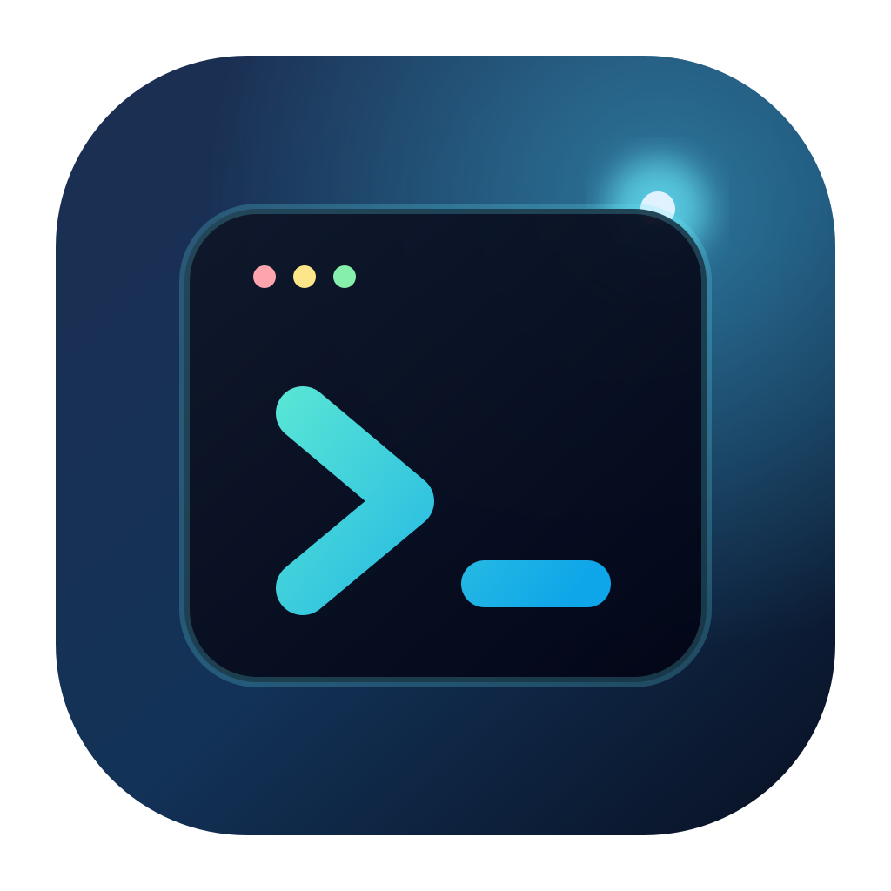

Your projects, already organised.
Add a local folder and give it a tabbed workspace. Split terminals, run your dev server, and move between projects without losing your place.

WorkbenchYOUR LOCAL DEVELOPMENT WORKSPACE
Less window juggling.
More making things.
Your terminals, coding agents, and git worktrees.
Together, in one desktop workspace.
~/projects/studio-search
❯ Add search to the command palette
✳ Claude Code
I’ll look at the existing commands
and add fuzzy search.
Read src/lib/commands.ts
Read src/lib/CommandPalette.svelte
+ Search across projects and commands
+
Keep keyboard navigation intact
✳ Updating CommandPalette.svelte…
~/projects/studio-search
❯ Review the search tests
The keyboard navigation tests pass.
Added coverage for empty queries.
✓ 12 tests passed
❯ bun run dev
VITE ready in 182 ms
Local: http://localhost:5173/
01 / A LITTLE LESS CONTEXT SWITCHING
One feature in progress. Another waiting for review. A terminal you’ll need in a minute. Give each of them a home.
Add a local folder and give it a tabbed workspace. Split terminals, run your dev server, and move between projects without losing your place.
Start and resume coding sessions beside real shell terminals. Keep session history attached to the project it belongs to.
Create git worktrees for parallel work. Each branch gets its own directory and workspace, so you can move between tasks with their context intact.
FAMILIAR TOOLS. A BETTER PLACE TO USE THEM.
02 / MAKE YOURSELF AT HOME
Free to download. Open to make your own.
macOS (Apple silicon + Intel) & Windows
Choose your installer on GitHub Releases.